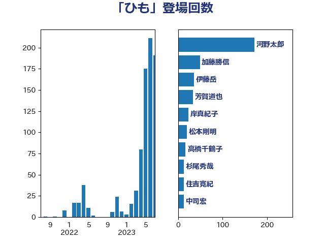

単語「ひも」

| 河野太郎 | 自由民主党 | 171 回 |
| 加藤勝信 | 自由民主党 | 49 回 |
| 伊藤岳 | 日本共産党 | 36 回 |
| 芳賀道也 | 国民民主党 | 34 回 |
| 岸真紀子 | 立憲民主党 | 23 回 |
| 松本剛明 | 自由民主党 | 20 回 |
| 高橋千鶴子 | 日本共産党 | 17 回 |
| 杉尾秀哉 | 立憲民主党 | 13 回 |
| 住吉寛紀 | 日本維新の会 | 13 回 |
| 中司宏 | 日本維新の会 | 13 回 |
| 長妻昭 | 立憲民主党 | 12 回 |
| 宮本岳志 | 日本共産党 | 12 回 |
| 西岡秀子 | 国民民主党 | 11 回 |
| 猪瀬直樹 | 日本維新の会 | 11 回 |
| 倉林明子 | 日本共産党 | 11 回 |
| 小川淳也 | 立憲民主党 | 9 回 |
| 早稲田ゆき | 立憲民主党 | 8 回 |
| 礒崎哲史 | 国民民主党 | 7 回 |
| 平木大作 | 公明党 | 7 回 |
| 小沼巧 | 立憲民主党 | 7 回 |
| 吉良よし子 | 日本共産党 | 7 回 |
| 輿水恵一 | 公明党 | 6 回 |
| 柳ヶ瀬裕文 | 日本維新の会 | 6 回 |
| 岡田直樹 | 自由民主党 | 6 回 |
| 山田太郎 | 自由民主党 | 6 回 |
| 山下芳生 | 日本共産党 | 6 回 |
| 堤かなめ | 立憲民主党 | 6 回 |
| 伊佐進一 | 公明党 | 6 回 |
| 遠藤良太 | 日本維新の会 | 5 回 |
| 田中健 | 国民民主党 | 5 回 |
| 宮本徹 | 日本共産党 | 5 回 |
| 堀場幸子 | 日本維新の会 | 5 回 |
| 上田清司 | 国民民主党 | 5 回 |
| 鈴木俊一 | 自由民主党 | 4 回 |
| 足立康史 | 日本維新の会 | 4 回 |
| 西村智奈美 | 立憲民主党 | 4 回 |
| 石橋通宏 | 立憲民主党 | 4 回 |
| 東徹 | 日本維新の会 | 4 回 |
| 守島正 | 日本維新の会 | 4 回 |
| 坂本祐之輔 | 立憲民主党 | 4 回 |
| 高市早苗 | 自由民主党 | 3 回 |
| 音喜多駿 | 日本維新の会 | 3 回 |
| 青柳仁士 | 日本維新の会 | 3 回 |
| 金子恭之 | 自由民主党 | 3 回 |
| 米山隆一 | 立憲民主党 | 3 回 |
| 末次精一 | 立憲民主党 | 3 回 |
| 川田龍平 | 立憲民主党 | 3 回 |
| 岸田文雄 | 自由民主党 | 3 回 |
| 大西健介 | 立憲民主党 | 3 回 |
| 大串正樹 | 自由民主党 | 3 回 |
| 吉田久美子 | 公明党 | 3 回 |
| 井坂信彦 | 立憲民主党 | 3 回 |
| 高橋英明 | 日本維新の会 | 2 回 |
| 重徳和彦 | 立憲民主党 | 2 回 |
| 里見隆治 | 公明党 | 2 回 |
| 藤巻健太 | 日本維新の会 | 2 回 |
| 紙智子 | 日本共産党 | 2 回 |
| 石井苗子 | 日本維新の会 | 2 回 |
| 田村智子 | 日本共産党 | 2 回 |
| 田村まみ | 国民民主党 | 2 回 |
| 田島麻衣子 | 立憲民主党 | 2 回 |
| 玉木雄一郎 | 国民民主党 | 2 回 |
| 浜田聡 | NHK党 | 2 回 |
| 浅野哲 | 国民民主党 | 2 回 |
| 沢田良 | 日本維新の会 | 2 回 |
| 池畑浩太朗 | 日本維新の会 | 2 回 |
| 森山浩行 | 立憲民主党 | 2 回 |
| 柚木道義 | 立憲民主党 | 2 回 |
| 掘井健智 | 日本維新の会 | 2 回 |
| 後藤茂之 | 自由民主党 | 2 回 |
| 寺田稔 | 自由民主党 | 2 回 |
| 大島九州男 | れいわ新選組 | 2 回 |
| 塩川鉄也 | 日本共産党 | 2 回 |
| 原口一博 | 立憲民主党 | 2 回 |
| 前原誠司 | 国民民主党 | 2 回 |
| 井原巧 | 自由民主党 | 2 回 |
| おおつき紅葉 | 立憲民主党 | 2 回 |
| 齋藤健 | 自由民主党 | 1 回 |
| 高木真理 | 立憲民主党 | 1 回 |
| 馬淵澄夫 | 立憲民主党 | 1 回 |
| 馬場伸幸 | 日本維新の会 | 1 回 |
| 須藤元気 | 無所属 | 1 回 |
| 阿部司 | 日本維新の会 | 1 回 |
| 鎌田さゆり | 立憲民主党 | 1 回 |
| 鈴木隼人 | 自由民主党 | 1 回 |
| 野田国義 | 立憲民主党 | 1 回 |
| 道下大樹 | 立憲民主党 | 1 回 |
| 近藤和也 | 立憲民主党 | 1 回 |
| 谷田川元 | 立憲民主党 | 1 回 |
| 藤田文武 | 日本維新の会 | 1 回 |
| 蓮舫 | 立憲民主党 | 1 回 |
| 葉梨康弘 | 自由民主党 | 1 回 |
| 落合貴之 | 立憲民主党 | 1 回 |
| 荒井優 | 立憲民主党 | 1 回 |
| 舟山康江 | 国民民主党 | 1 回 |
| 自見はなこ | 自由民主党 | 1 回 |
| 羽田次郎 | 立憲民主党 | 1 回 |
| 緑川貴士 | 立憲民主党 | 1 回 |
| 福田昭夫 | 立憲民主党 | 1 回 |
| 石田昌宏 | 自由民主党 | 1 回 |
| 田村貴昭 | 日本共産党 | 1 回 |
| 田所嘉徳 | 自由民主党 | 1 回 |
| 田嶋要 | 立憲民主党 | 1 回 |
| 清水貴之 | 日本維新の会 | 1 回 |
| 泉健太 | 立憲民主党 | 1 回 |
| 梅村聡 | 日本維新の会 | 1 回 |
| 柴田巧 | 日本維新の会 | 1 回 |
| 柴愼一 | 立憲民主党 | 1 回 |
| 枝野幸男 | 立憲民主党 | 1 回 |
| 新妻秀規 | 公明党 | 1 回 |
| 川崎ひでと | 自由民主党 | 1 回 |
| 川合孝典 | 国民民主党 | 1 回 |
| 岬麻紀 | 日本維新の会 | 1 回 |
| 岡本あき子 | 立憲民主党 | 1 回 |
| 山本太郎 | れいわ新選組 | 1 回 |
| 宮路拓馬 | 自由民主党 | 1 回 |
| 天畠大輔 | れいわ新選組 | 1 回 |
| 塩崎彰久 | 自由民主党 | 1 回 |
| 堂込麻紀子 | 無所属 | 1 回 |
| 土田慎 | 自由民主党 | 1 回 |
| 吉良州司 | 無所属 | 1 回 |
| 吉田はるみ | 立憲民主党 | 1 回 |
| 吉田とも代 | 日本維新の会 | 1 回 |
| 務台俊介 | 自由民主党 | 1 回 |
| 加田裕之 | 自由民主党 | 1 回 |
| 保岡宏武 | 自由民主党 | 1 回 |
| 伊藤孝恵 | 国民民主党 | 1 回 |
| 仁木博文 | 無所属 | 1 回 |
| 中島克仁 | 立憲民主党 | 1 回 |
| 上田勇 | 公明党 | 1 回 |
| 一谷勇一郎 | 日本維新の会 | 1 回 |
| ながえ孝子 | 無所属 | 1 回 |